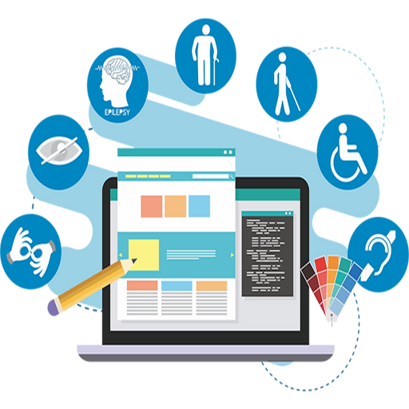

Tecnologia Assistiva: Avanços que Facilitam a Vida Cotidiana

A tecnologia assistiva desempenha um papel fundamental na melhoria da acessibilidade na vida cotidiana.
Essa tecnologia refere-se a dispositivos, software e equipamentos projetados para ajudar pessoas com deficiência
a superar desafios e viver de forma mais independente.
Um dos avanços notáveis na tecnologia assistiva é a popularização dos leitores de tela, que permitem que pessoas
com deficiência visual acessem informações em computadores e dispositivos móveis. Além disso, tecnologias de reconhecimento
de voz têm melhorado significativamente, facilitando a comunicação para pessoas com dificuldades motoras.
Outros exemplos incluem cadeiras de rodas elétricas controladas por joystick, sistemas de comunicação alternativa e aumentativa
(CAA), órteses avançadas e próteses controladas por sensores. Esses dispositivos estão transformando a vida cotidiana de muitas
pessoas com deficiência, permitindo maior autonomia e participação na sociedade.
À medida que a tecnologia assistiva continua a evoluir, é importante garantir que esses recursos sejam acessíveis e
economicamente viáveis para todos que deles necessitem. Isso não apenas melhora a vida das pessoas com deficiência, mas também
contribui para uma sociedade mais inclusiva e equitativa.